Hướng dẫn sử dụng
Tài liệu chi tiết giúp bạn làm chủ HT Proxy từ A đến Z.

Cài đặt ban đầu & Kích hoạt License
Hướng dẫn tải phần mềm, đăng ký tài khoản, kích hoạt license key và thiết lập lần đầu tiên.
Kết nối phần mềm với Router
Hướng dẫn cách nhập thông tin kết nối router, test kết nối và xem thông tin hệ thống proxy.
Cách xoay IP — Thủ công, hàng loạt & tự động
3 cách xoay IP: click từng cái trên Dashboard, xoay tất cả cùng lúc, hoặc đặt lịch xoay tự động theo thời gian.
Cài đặt Proxy — Đổi mật khẩu & quản lý credential
Hướng dẫn đổi username/password proxy theo chế độ thủ công, ngẫu nhiên hoặc xóa trắng. Đổi từng cái hoặc tất cả.
Gán Proxy cho thiết bị trong mạng LAN
Gán proxy cho PC, điện thoại, máy ảo theo chế độ tuần tự, ngẫu nhiên hoặc quay vòng. Hỗ trợ gán hàng loạt.
Kiểm tra Proxy sống/chết & xử lý lỗi
Sử dụng trang Kiểm tra Proxy để check IP, trạng thái sống/chết. Xử lý các lỗi thường gặp: proxy die, timeout.
Sử dụng API xoay IP — Tạo link & token
Hướng dẫn tạo token, lấy link xoay IP và dán lên trình duyệt hoặc gọi từ bot/script tự động.
Cài đặt ban đầu & Kích hoạt License
Bước 1: Tải & cài đặt phần mềm
- Tải file cài đặt HT-Proxy-Setup.exe từ link được cung cấp
- Chạy file cài đặt, chọn thư mục cài đặt (mặc định là
C:\Program Files\HT Proxy) - Đợi cài đặt hoàn tất, mở phần mềm
Bước 2: Đăng ký tài khoản
- Tại màn hình đăng nhập, click "Đăng ký"
- Nhập: Họ tên, Email, Số điện thoại, Mật khẩu
- Nhấn "Tạo tài khoản"
Bước 3: Nhập License Key
Sau khi đăng nhập, bạn sẽ được yêu cầu nhập License Key:
License key do admin cấp. Liên hệ bộ phận kinh doanh qua Zalo hoặc Facebook để mua key.
Bước 4: Thiết lập ban đầu
Sau khi kích hoạt thành công:
- Vào "Cài đặt" để kết nối router (xem bài tiếp theo)
- Bắt đầu sử dụng các tính năng trên "Bảng điều khiển"
Mỗi license key có thời hạn sử dụng (30 ngày, 90 ngày, 1 năm...). Khi hết hạn, phần mềm sẽ thông báo và yêu cầu gia hạn. Dữ liệu tài khoản và cấu hình vẫn được lưu trữ.
Kết nối phần mềm với Router
Chuẩn bị
- Router đã được cấu hình proxy và hoạt động bình thường
- Có tài khoản admin trên router
- Máy tính và router cùng mạng hoặc có thể kết nối qua IP public
Bước 1: Mở trang Cài đặt
Trên sidebar trái, click vào "Cài đặt". Tại đây bạn sẽ thấy form nhập thông tin router:
Bước 2: Kiểm tra kết nối
Nhấn "Kết nối". Nếu thành công, phần mềm sẽ hiển thị thông tin router: tên router, phiên bản hệ điều hành, thời gian chạy, số lượng proxy đang hoạt động.
Bước 3: Quản lý nhiều router (Multi-Router)
HT Proxy hỗ trợ kết nối nhiều router cùng lúc. Tại trang Cài đặt, click "Thêm Router" để thêm router mới vào danh sách.
Nếu kết nối thất bại, kiểm tra: (1) IP nhập có đúng không, (2) Tài khoản có đúng không, (3) Firewall trên router hoặc mạng có đang chặn không. Nếu vẫn lỗi, liên hệ hỗ trợ kỹ thuật.
Cách xoay IP — Thủ công, hàng loạt & tự động
Xoay IP (rotate IP) là tính năng cốt lõi của HT Proxy. Khi xoay, phần mềm sẽ ngắt kết nối PPPoE và kết nối lại, nhà mạng sẽ cấp IP public mới.
Cách 1: Xoay IP từng proxy trên Dashboard
- Mở Bảng điều khiển (Dashboard)
- Tìm proxy cần xoay trong danh sách
- Nhấn nút Xoay IP (biểu tượng xoay) bên cạnh proxy đó
- Đợi vài giây để nhà mạng cấp IP mới
- IP mới sẽ hiển thị tự động, phần mềm tự thử lại tối đa 5 lần nếu IP bị trùng
Cách 2: Xoay tất cả cùng lúc
Nhấn nút "Xoay tất cả" trên Dashboard. Phần mềm sẽ ngắt tất cả kết nối rồi kết nối lại cùng lúc. Tất cả proxy sẽ nhận IP mới.
Cách 3: Đặt lịch xoay tự động
Vào Cài đặt → Xoay tự động, bạn có thể đặt:
Cách 4: Xoay qua API link
Vào trang "API" trong phần mềm, tạo token rồi copy link xoay IP. Dán link lên trình duyệt hoặc gọi từ script. Xem chi tiết tại bài "Sử dụng API xoay IP".
- Thời gian xoay phụ thuộc vào nhà mạng (VNPT, Viettel, FPT), trung bình 5-15 giây
- Một số nhà mạng có thể trả IP cũ nếu xoay quá nhanh — nên đợi ít nhất 30 giây
- Phần mềm tự thử lại tối đa 5 lần nếu IP bị trùng với IP cũ
- Kiểm tra lịch sử xoay IP tại trang "Lịch sử xoay"
Cài đặt Proxy — Đổi mật khẩu & quản lý credential
Mỗi proxy có username/password riêng để xác thực khi sử dụng. Bạn có thể thay đổi thông tin này bất kỳ lúc nào ngay trên Dashboard.
Đổi mật khẩu 1 proxy
- Trên Dashboard, tìm proxy cần đổi
- Click vào biểu tượng chỉnh sửa (bút chì)
- Chọn chế độ:
- Thủ công: Nhập username/password mới tùy ý
- Ngẫu nhiên: Hệ thống tự tạo username/password ngẫu nhiên
- Xóa trắng: Xóa credential, proxy không cần xác thực
- Nhấn "Lưu". Hệ thống sẽ cập nhật và tự động khởi động lại proxy đó
Đổi mật khẩu tất cả proxy
Nhấn "Đổi tất cả" trên Dashboard. Chọn chế độ (ngẫu nhiên sẽ tạo credential khác nhau cho từng proxy). Hệ thống sẽ cập nhật toàn bộ rồi khởi động lại tất cả proxy.
Thông tin proxy để sử dụng
Sau khi cài đặt, bạn có thể copy thông tin proxy dạng:
Sau khi đổi credential, proxy sẽ khởi động lại (mất khoảng 10-30 giây). Trong thời gian đó proxy tạm không dùng được. Hãy thông báo cho khách hàng nếu bạn đang cho họ sử dụng.
Gán Proxy cho thiết bị trong mạng LAN
Tính năng Gán Proxy cho phép bạn gán proxy cho từng thiết bị trong mạng nội bộ (PC, điện thoại, máy ảo...). Mỗi thiết bị sẽ đi internet qua một proxy riêng.
Cách xem danh sách thiết bị
Vào trang "Gán Proxy". Phần mềm sẽ hiển thị tất cả thiết bị đang kết nối trong mạng LAN qua DHCP: địa chỉ IP, tên thiết bị, MAC address.
Gán proxy cho 1 thiết bị
- Tìm thiết bị cần gán trong danh sách
- Click "Gán" bên cạnh thiết bị
- Chọn proxy muốn gán (VD: proxy số 1, proxy số 5...)
- Nhấn "Xác nhận"
Gán hàng loạt
Nhấn "Gán hàng loạt", chọn các thiết bị và chế độ gán:
- Tuần tự (Sequential): Thiết bị 1 → proxy 1, thiết bị 2 → proxy 2...
- Ngẫu nhiên (Random): Gán ngẫu nhiên proxy cho từng thiết bị
- Quay vòng (Round-Robin): Nếu hết proxy thì quay lại từ đầu
Hủy gán proxy
Click "Hủy gán" bên cạnh thiết bị đã được gán, hoặc nhấn "Hủy tất cả" để xóa toàn bộ.
Kiểm tra Proxy sống/chết & xử lý lỗi
Cách kiểm tra
Vào trang "Kiểm tra Proxy". Nhấn "Kiểm tra tất cả" để check toàn bộ proxy. Phần mềm sẽ kiểm tra đồng thời và hiển thị kết quả realtime:
- Alive (Sống): Proxy hoạt động bình thường, hiển thị IP public
- Dead (Chết): Proxy không phản hồi, hiển thị lý do lỗi
Hỗ trợ kiểm tra qua HTTP
hoặc SOCKS5. Bạn cũng có thể kiểm tra proxy bên ngoài (không phải của
hệ thống) bằng cách nhập danh sách proxy theo format IP:Port:User:Pass.
Xử lý lỗi thường gặp
Proxy Dead — "Interface down"
Nguyên nhân:
Kết nối PPPoE bị mất hoặc line bị disable.
Xử lý: Thử xoay
IP lại proxy đó. Nếu vẫn die, kiểm tra đường truyền internet.
Proxy Dead — Timeout
Nguyên
nhân: Router quá tải hoặc container proxy chưa khởi
động.
Xử lý: Thử restart container tại Dashboard. Nếu nhiều
proxy cùng timeout, thử restart tất cả container.
Proxy Dead — Authentication Failed
Nguyên
nhân: Username/password proxy sai hoặc đã bị thay
đổi.
Xử lý: Kiểm tra lại credential trên Dashboard. Đổi mật
khẩu nếu cần.
Sử dụng API xoay IP — Tạo link & token
HT Proxy cung cấp tính năng API xoay IP cho phép bạn tạo link đơn giản — chỉ cần dán link lên trình duyệt hoặc gọi từ script là xoay IP ngay.
Bước 1: Kết nối API Server
Vào trang "API" trong
phần mềm. Nhập địa chỉ API server (VD: http://yourdomain.com)
rồi nhấn "Kết nối". Phần mềm sẽ tự đồng bộ danh sách router lên API
server.
Bước 2: Tạo Token
Chuyển sang tab "Tokens" → nhấn "Tạo Token". Đặt tên token (VD: "Bot Telegram"). Token sẽ được tạo và gán với tất cả router hiện có.
Bước 3: Lấy link xoay IP
Nhấn "Xem Links" bên cạnh token. Mỗi router sẽ có 3 loại link:
http://domain/api/pppoe-out2/ROUTER_HOST/TOKEN
http://domain/api/all/ROUTER_HOST/TOKEN
http://domain/api/status/ROUTER_HOST/TOKEN
Cách sử dụng
- Dán link lên trình duyệt: Mở Chrome, paste link ROTATE → Enter → IP mới hiện ra
- Gọi từ script: Dùng cURL, Python requests, hoặc bất kỳ HTTP client nào
- Bot Telegram: Gọi link từ bot → trả về JSON với IP cũ/mới
Response mẫu
{
"success": true,
"host": "router1.example.com",
"interface": "pppoe-out2",
"old_ip": "42.116.182.xxx",
"new_ip": "42.113.213.xxx",
"retries": 1,
"message": "Đã xoay IP thành công (sau 2 lần thử)"
}
- 1 token dùng được cho nhiều router (multi mode)
- Phần mềm tự thử lại tối đa 5 lần nếu IP trùng
- Xem lịch sử request tại tab "Logs" trong trang API
- Có thể tắt/bật hoặc xóa token bất kỳ lúc nào
Vẫn cần sự trợ giúp?
Đội ngũ kỹ thuật luôn sẵn sàng hỗ trợ bạn 24/7 qua Zalo hoặc Facebook.